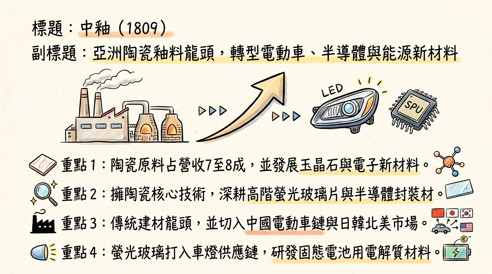
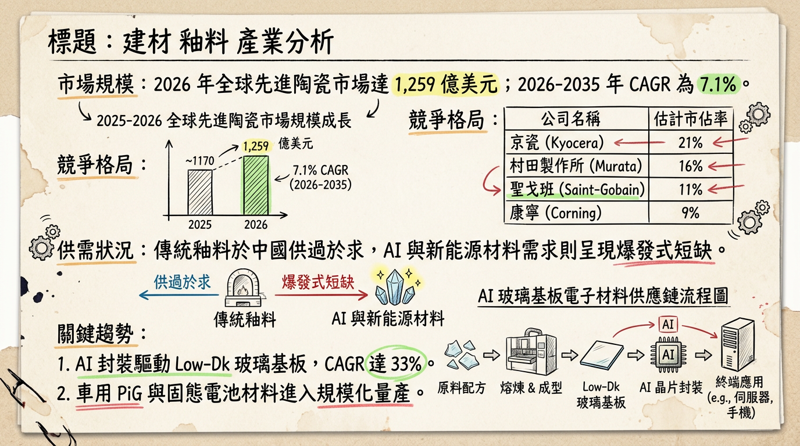
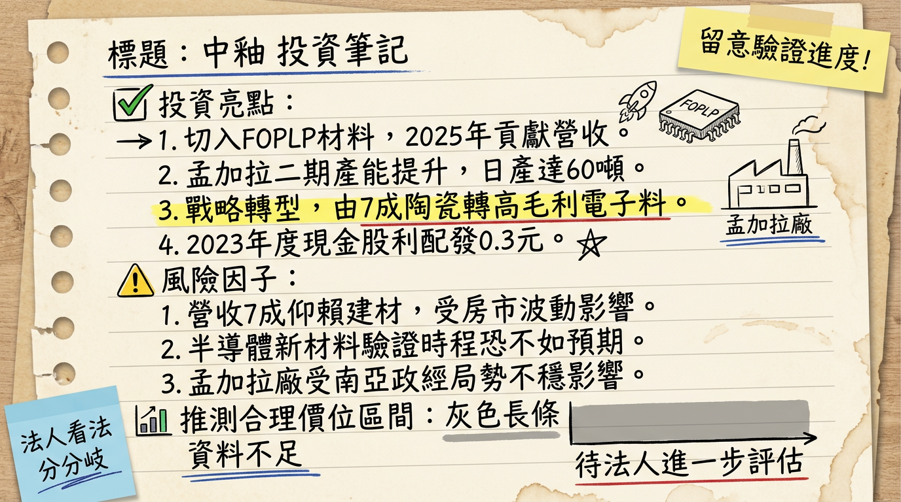

1809 中釉 深度研究報告：從傳統釉料霸主邁向半導體與電動車新材料轉型關鍵期
一句話摘要
中釉（1809）憑藉亞洲最大陶瓷釉料規模與深厚的玻璃化學技術，透過「電子級低介電玻璃（Low-Dk）」與「車用螢光玻璃片（PiG）」成功切入 AI 半導體封裝與電動車供應鏈，2026 年將迎來產能放量與獲利結構性改善的甜蜜點。
公司概覽
中釉為亞洲規模最大的陶瓷釉料生產商。近年積極從低毛利的建築材料轉型至高毛利的新材料領域，目前營收結構正處於質變階段。
營收結構與業務分布
| 事業部 | 主要產品 | 2025 營收佔比 | 終端應用 |
|---|
| 陶瓷事業部 | 陶瓷熔塊、色釉料、數位墨水 | 70% - 75% | 建築陶瓷、磁磚、衛生瓷器 |
| 新材料事業部 | 螢光玻璃片(PiG)、低介電(Low-Dk)玻璃、固態電解質 | 15% - 20% | 電動車LED燈、半導體封裝、固態電池 |
| 建材事業部 | 中釉玉晶石、隔音墊、SPC地板 | 10% - 15% | 大型公共工程、高階商用建築、室內設計 |
核心競爭優勢
技術護城河： 具備自主研發玻璃配方能力，成功開發出與歐美大廠同級的電子級低介電材料，並取得 IATF-16949 汽車認證。
區域市場領先： 孟加拉廠市佔率持續攀升，為當地陶瓷原料主要供應商，避開中國房產景氣波動影響。
供應鏈垂直整合： 子公司「誇特材料」生產半導體級氟化彈性體，與母公司共同提供電子封裝完整材料方案。
財務分析
最近 6 個月月營收趨勢
| 年月份 | 營收金額 (億元) | 年增率 (YoY) | 月增率 (MoM) |
|---|
| 2026/01 | 2.32 | +25.87% | +2.38% |
| 2025/12 | 2.26 | -4.87% | +21.80% |
| 2025/11 | 1.86 | -12.31% | -17.26% |
| 2025/10 | 2.25 | +16.21% | +4.15% |
| 2025/09 | 2.16 | +13.91% | -2.50% |
| 2025/08 | 2.21 | +19.71% | -1.14% |
年度獲利指標預估
- 2024 年度： 營收 24.15 億元，EPS 0.33 元（實際）。
- 2025 年度： 營收約 24.98 億元，EPS 推估 0.18~0.22 元（新材料研發投入期，獲利略降）。
- 2026 年度展望： 受惠越南新廠投產與 AI 材料放量，預計 EPS 可回升至 0.30~0.38 元。
法說會重點
市場布局： 傳統陶瓷事業重心由中國轉向南亞（孟加拉）與非洲市場。非洲貝南市場已進入重複出貨期，獲利貢獻轉正。
新材料認證： 車用 PiG 螢光片正向日、韓車燈大廠送樣；Low-Dk 電子玻璃已切入 AI 與半導體測試鏈。
資本支出與新廠：
* 斥資 3.82 億元於印尼中爪哇省購地建廠。
* 越南分公司及生產工廠 預計於 2026 年上半年正式營運，分散地緣政治風險。
券商觀點
註：目前國內大型金控券商較少針對中釉發布量化評等，主要由投研平台提供預估，市場情緒轉趨樂觀。
| 分析平台 | 目標價 | 評等 | 日期 | 核心邏輯 |
|---|
| 市場共識 (CMoney/富果) | 32.0 - 35.0 | 積極關注 | 2026/02 | AI材料溢價、新材料佔比提升 |
| 投顧法人 (內資短線) | 30.5 | 中立/偏多 | 2026/01 | 本益比偏高，但具轉型題材 |
財報深度分析
利潤率趨勢與營運效率
| 指標 | 2025 Q3 | 2025 Q2 | 2025 Q1 | 趨勢分析 |
|---|
| 毛利率 (%) | 18.68% | 19.5% | 20.0% | 原料成本回落，高毛利新材料支撐毛利。 |
| 營業利益率 (%) | -0.05% | 0.75% | 0.87% | 本業微利，仍待新材料營收規模化。 |
| 存貨週轉天數 | 109.05 | 115.4 | 122.1 | 去庫存成效顯著，營運效率提升。 |
- 資本支出： 主要集中在越南及印尼新廠建置，以及子公司夸特材料的半導體生產線設備採購。
- 負債比： 維持在 26% 左右的極低水平，財務結構極其穩健。
股權異動與資本結構
股利政策： 2025 年配發現金股利 0.25 元，殖利率約 1.2%（以 20 元股價計）。
申報轉讓： 近一年大股東持股穩定，無重大集體轉讓紀錄。
可轉債： 目前無流通在外的可轉債，無股本稀釋風險。
產業分析
競爭格局比較
| 競爭對手 | 營收規模 (2025預估) | 毛利率 (Q3) | 全球地位 | 技術亮點 |
|---|
| 西班牙 Altadia | > 100 億 TWD | ~25% | 全球第一 | 數位墨水、高端釉料 |
| 中釉 (1809) | ~25 億 TWD | 18.68% | 亞洲龍頭 | PiG、Low-Dk 電子玻璃 |
| 台玻 (1802) | ~460 億 TWD | 11.66% | 玻璃巨頭 | 二代 Low-Dk 玻纖布 |
| 和成 (1810) | ~48 億 TWD | 25.86% | 衛浴龍頭 | 軍工材料、碳纖維 |
近期催化劑
1.
大單認證： 結晶化玻璃取得桃園機場 T3 及 ASML 林口新廠專案。
2. AI 玻璃基板趨勢： 低介電材料符合 AI 晶片散熱需求。
3. 新廠投產： 越南新廠 2026 上半年產能開出。
1. 中國房地產景氣持續疲軟。
2. 氧化鋁等原物料價格波動。
⭐ 成長動能時間軸
- 2024 Q4： 半導體 FOPLP 封裝材料開始送樣，並取得車用 IATF-16949 認證。
- 2025 Q2： 孟加拉二期產能利用率突破 85%，進入收穫期。
- 2025 Q4： 取得 ASML 與桃園機場 T3 等重大指標性工程訂單，開始部分認列。
- 2026 Q1： 越南新廠正式投產，應對東南亞市場需求與關稅優化。
- 2026 Q2： 電子級低介電(Low-Dk)玻璃粉正式放量，預計新材料營收佔比挑戰 25%。
2026 展望
- 成長動能： 電子級新材料與車用 PiG 將進入 2-3 年的高成長期；傳統事業受惠於東南亞與非洲新興市場需求穩定。
- 風險因子： 研發支出持續高企影響營業利益率；孟加拉匯率波動風險；電子級材料客戶認證進度若延後將衝擊預期營收。
投資結論
轉型紅利： 中釉已脫離純傳產範疇，AI 半導體封裝材料與電動車車燈材料是本益比（PE）上修的主要推手。
基本面支撐： 2026 年 1 月營收展現強勁成長（+25.87%），預告 2026 年營運將顯著優於 2025 年。
資產潛力： 苗栗通霄廠資產開發潛力為股價下檔提供保護，具備資產股與新材料雙重題材。
建議： 2026 年 EPS 有望挑戰 0.35 元以上，參考轉型電子材料股的估值，目標價區間建議設於 32 - 38 元，適合在中線拉回至 25-27 元區間布局。
本報告由 AI 自動產生，資料來源為公開網路資訊，僅供參考，不構成投資建議。
產生時間：2026-03-04 07:56
📊 資訊卡


